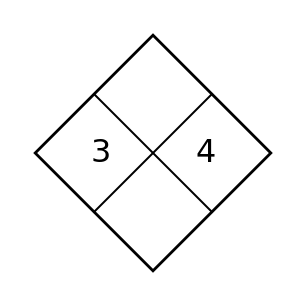
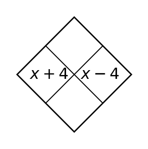
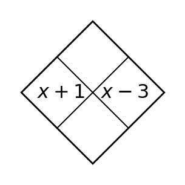

1
Complete the Diamond Problem by using the side entries to determine the product (top) and sum (bottom).

Complete the Diamond Problem by using the side entries to determine the product (top) and sum (bottom).
Simplify $(3x^2+2x-5)+(x^2-4x+7)$.
Multiply $4x(2x-3)$.
Simplify $(5x^2+x)-(2x^2-3x)$.
Factor $14x+21$.
Factor $18x^2+12x$.
Simplify $(2x^2-3x+4)+(x^2+5x-6)$.
Solve the system by substitution: $y=2x+1$ and $y=-x+7$.
Factor $20x^2+15x$.
Multiply $3x(5x+2)$.
Solve $y=3x-2$ and $2x+y=8$ by substitution.
Which method is more direct for $y=4x+1$ and $2x-y=5$: substitution or elimination? Explain.
Complete the Diamond Problem. Then explain how its product and sum connect to trinomial factoring.

For $y=x^2-4$, state the $y$-intercept.
The graph of a quadratic opens upward and has vertex $(2,-5)$. Is the vertex a maximum or minimum?
Evaluate $f(0)$ for $f(x)=x^2+3x-7$.
Factor $x^2+8x+15$.
Factor $x^2-7x+10$.
For $y=x^2-2x-9$, state the $y$-intercept.
Solve the system $x+y=5$ and $x-y=1$.
Factor $x^2-4x-21$.
The graph of a quadratic opens downward and has vertex $(-3,6)$. Is the vertex a maximum or minimum?
Solve $2x+y=7$ and $2x-y=1$ by elimination.
The equations $y=2x+1$ and $y=2x-4$ have how many solutions? Explain.
Complete the Diamond Problem and notice the conjugate structure of the side expressions.

Which family includes $y=3x+2$?
Which family includes $y=x^2-4x+1$?
A table has a constant ratio of 2 between successive outputs. Which common function family does that suggest?
Factor $x^2-64$.
Factor $x^2+10x+25$.
Which family includes $y=-4x+5$?
Adult tickets cost 8 and student tickets cost 5. A club sold 20 tickets for 130. Define variables and write a system; then solve.
Factor $x^2+24x+144$.
Which family includes $y=3x^2-2x+1$?
A gym charges a 20 fee plus 8 per class. Another charges 44 plus 4 per class. Write a system and find when costs are equal.
Two numbers have sum 14 and difference 4. Write and solve a system.
Complete the Diamond Problem; connect the two side numbers to a possible factor pair.

The parent graph $y=x^2$ is shifted right 3. Write a rule.
What is the vertex of $y=(x+2)^2-5$?
The point $(1,4)$ shifts down 3 units. What is its image?
For $y=(x+3)(x-4)$, state the zeros.
Write a monic factored form with zeros -1 and 5.
The parent graph $y=x^2$ is shifted right 5. Write a rule.
For $y\gt-2x+3$, is the boundary line solid or dashed, and which side is shaded?
Write a monic factored form with zeros -3 and 7.
What is the vertex of $y=(x+3)^2-2$?
Graphing $y\le x+2$: what boundary and shading are required?
Does $(0,0)$ satisfy $y\gt3x-2$?
Complete the Diamond Problem; use the side factors to connect product form and expanded structure.

For $y=3x^2$, describe the vertical change from $y=x^2$.
For $y=-x^2$, describe the reflection.
For $y=\tfrac12x^2$, describe the vertical change.
For $y=(x-2)^2+3$, state the vertex.
For $y=(x+4)(x-1)$, state the zeros.
For $y=5x^2$, describe the vertical change from $y=x^2$.
For the system $y\ge x-1$ and $y\le -x+5$, describe what the overlap means.
For $y=(x-4)(x+3)$, state the zeros.
How is $y=-(x+2)^2$ reflected compared with $y=(x+2)^2$?
Does $(2,1)$ satisfy both $y\ge x-2$ and $y\lt -x+5$?
A feasible region is the overlap of two shaded half-planes. What does a point outside the overlap mean?